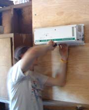
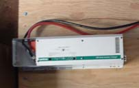
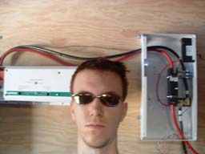
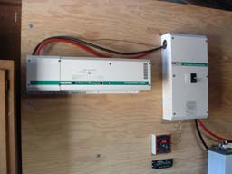

Inverter Installation
The installation of the inverter took considerably less time than the DC disconnect. The hardest part was mounting the darn thing on the wall. It weighed quite a bit and took us several tries to get it up there. My Dad is pictured below putting the last of the screws in. There were three connections to run from the DC side of the inverter: ground, positive, negative.

I regret that I did not take any close-up photos of these connections but then again, they were rather simple. Conveniently, the DC disconnect was as far as the cables needed to run. The positive lead went to the top end of the DC breaker switch and both the negative lead and the ground wires went to the bonding block.


As you can see here, I was pretty happy with myself. I could turn the system on and hear the relays switching in the inverter. I hadn't read the manual yet so I hadn't a clue what it was doing. *sigh*

Above is a nice photo of the system about half way done. This was nearing the end of day two. The TriMetric meter was on and displaying the current battery voltage. Turning on the DC Disconnect activated the inverter and as I later learned, upon finding no loads, the inverter switched into "search mode."
The small black rectangular box below the TriMetric meter is the Morningstar Sun Saver which is the charger for the batteries. Although it is mounted in this photo, it is simply a placeholder.
| {kind=link}
{kind=link}
{kind=link}
{kind=link}